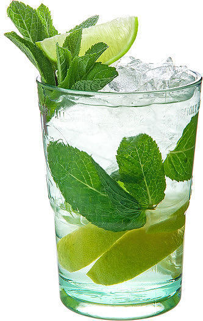

Мохито

Авторство предшественника мохито, коктейля «Драк», приписывают английскому пирату Фрэнсису Дрейку.
Тогда, в XVI веке, мяту и лайм в ром добавляли по двум причинам — они служили профилактикой болезней
и заглушали плохой вкус некачественного рома.
О происхождении названия «мохито» есть несколько версий.
Одна гласит, что слово происходит от исп. Mojo — соус мохо, распространённый на Кубе и Канарах,
обычно в него входят чеснок, перец чили, паприка, лимонный сок, кориандр или тмин, шафран, зелень, томат, вода.
Другая версия утверждает, что мохито — это изменённое «мохадито», что значит «слегка влажный».